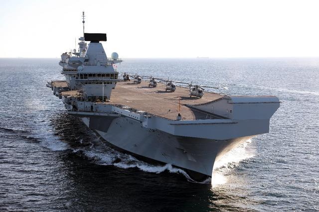

制霸海洋的''大英帝国''早已远去，目前英国海军，那真是捉襟见肘！2009年7月7号，英国皇家海军的伊丽莎白女王号航母正式开工建造，2017年12月7号的时候该航母宣告加入了英国皇家海军序列服役。不过这艘航母在服役之后的很长一段时间之内，依旧是一个半成品。首先舰上有大量的问题没有解决，比如说主推进轴问题，以及舱室的多次漏水，甚至非常尴尬的是，这艘航母在刚刚服役之后不到两个星期就出现了漏水问题，被迫立即返厂大修。在后来的三年多时间之内，1号舰伊丽莎白女王号以及2号舰威尔士亲王号，又多次出现了漏水事故，最高时一年就有三回！
不过就在近日，英国皇家海军还是顶着重重压力，宣布伊丽莎白女王号航母战斗群正式形成了战斗力。按照英国方面的宣布，如今伊丽莎白女王号航母已经有了''初始战斗力''（IOC），预计将会在今年春季结束之前，远赴中东以及太平洋地区执行军事任务，一来继续检验这艘航母的远洋能力，二来也要在苏伊士运河以东的地方帮着英国人刷存在感。 这艘航母究竟能不能打，英国人自己其实心里也十分有数。但这好歹是英国航母在服役之路上迈出的重要一步。

更多更多航母请百度